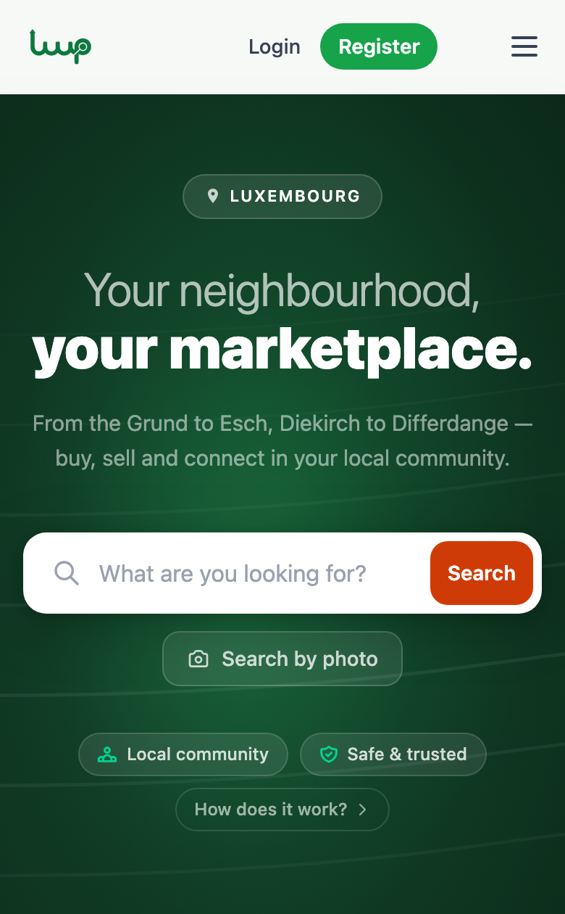

What I do
I lead quality. That means deciding how a team tests, what gets automated, and which bugs are worth stopping a release for.
I came to QA the long way: freelance design and marketing, then business process analysis. So I look for the manual work that slows people down and automate it. One automation project I led saved a business seven working days a year.
I studied Digital Media and Interaction Design, so I also care whether a product feels right to use, not only whether it passes.
Luup
A peer-to-peer marketplace for buying, selling and sharing locally in Luxembourg. It is live, and I built it end to end.
- Angular 19 web app and an Expo (React Native) mobile app
- Node and Express API on PostgreSQL, deployed with Docker Compose and GitHub Actions
- AI that writes listing descriptions from photos and finds items from a picture, plus content moderation
- Seven interface languages, with listings and chat translated automatically
- Error monitoring with Sentry and server metrics

Experience
Quality and testing
NowChapter Lead, QASalonkee · Jul 2025 to now
- promoted to lead the QA chapter after almost three years as a QA engineer on the team
2022QASalonkee · Sep 2022 to Jul 2025
- designs, builds and maintains Cypress end-to-end tests, and runs them in CI/CD with the developers
- took charge of planning and managing the Salonkee B2C app, which led to a fast, successful launch
- oversees testing for mobile app development and major platform rollouts
- runs UAT sessions, collects feedback and tracks issues until the release is ready
- onboards and mentors teammates in Cypress and test automation
- wrote the team's QA documentation: test cases, how-to guides and bug report templates
- links QA, development and customer support so platform issues become product improvements
2021Functional Test AnalystFor-Sight · Apr 2021 to Aug 2022
- wrote test plans, test cases and user stories to cut production defects each release
- ran exploratory and regression testing
- automated UI regression with Selenium WebDriver in C#
- brought Xray test management into Jira
- led a project that saved the business 7 working days a year
Process and marketing
2020Business Process AnalystForth Communication · Dec 2020 to May 2021
- mapped business processes with workflow diagrams and Gantt charts
- automated file handling between departments with scripts
- worked with upper management on strategy and new processes
2019Marketing ExecutiveForth Communication · Oct 2019 to Dec 2020
- nearly doubled the company's LinkedIn following
- grew the Twitter following 5%, including accounts such as Ad Age and the IDM
- built landing pages, guides, infographics and the company Facebook page
- ran campaigns for three brands, including a hotel CRM and a pensions SaaS product
Design and creative work
2018Co-founderEH1 Marketing · Jan 2018 to Jan 2019
- started a non-profit digital media and design agency where students gained professional experience while studying
2017Sales and Marketing InternG1 Group · Jan to May 2017
- wrote and designed content with the sales and marketing managers
- ran social media for several venues across multiple platforms
2014Freelance Digital Media Designer and MarketerEHS Designs · Sep 2014 to Apr 2020
- social media, design and project management for Edinburgh bars and venues
- clients included G1 Group and the Theatre Royal Bar
Education
2019BSc (Hons) Digital Media and Interaction DesignEdinburgh Napier University
- graduated with honours
2013BaccalaureateEuropean School of Luxembourg
- prize for the best graduate performance in IT
Earlier work
2013HospitalityLuxembourg and Edinburgh · 2013 to 2017
- assistant manager of a bar and café in Luxembourg, then bartender and bar supervisor in Edinburgh
- planned promotional events, trained staff and handled stock and suppliers
Beyond testing
Before QA I worked in design and marketing. I still make visuals, photography and sound. See the projects or read more about me.
Tools
- Cypress
- Selenium
- C#
- CI/CD
- SQL
- Jira
- Xray
- Postman
- GitHub
- TypeScript
- Angular
- Node
Languages I speak
- Danish
- English
- French
- German
- Luxembourgish